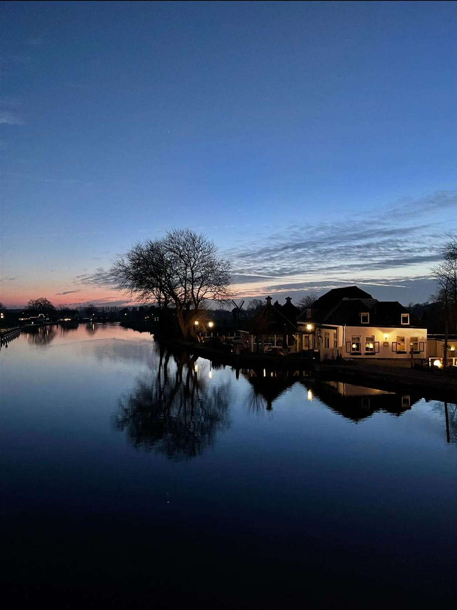
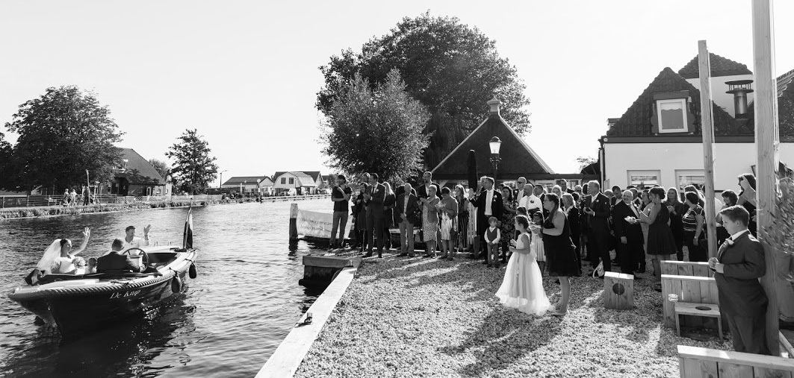
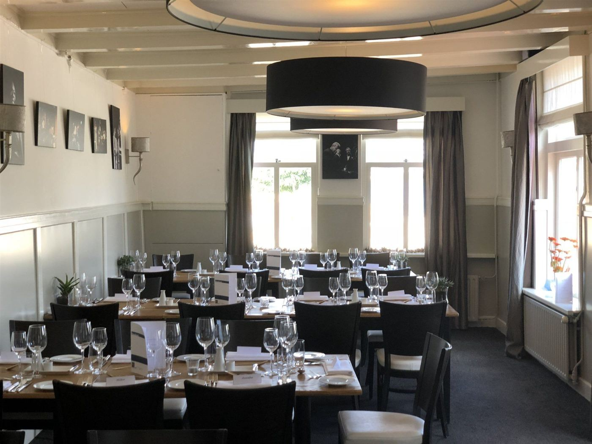
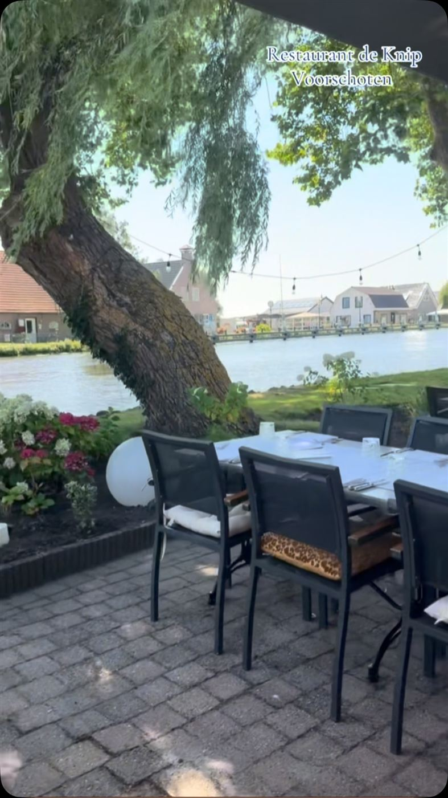
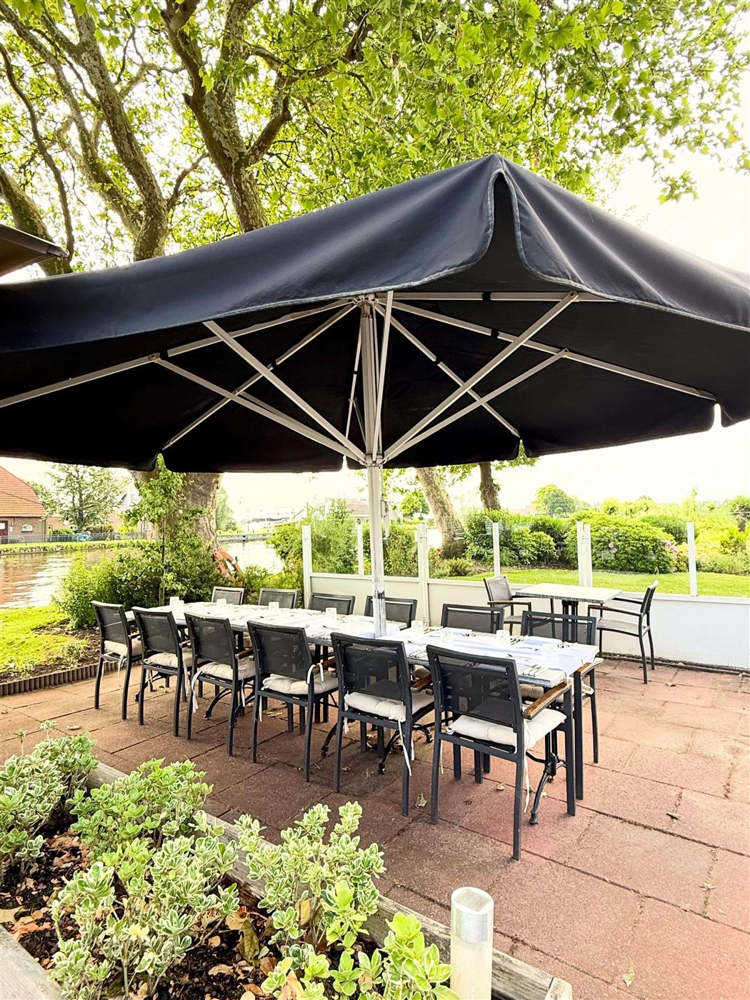
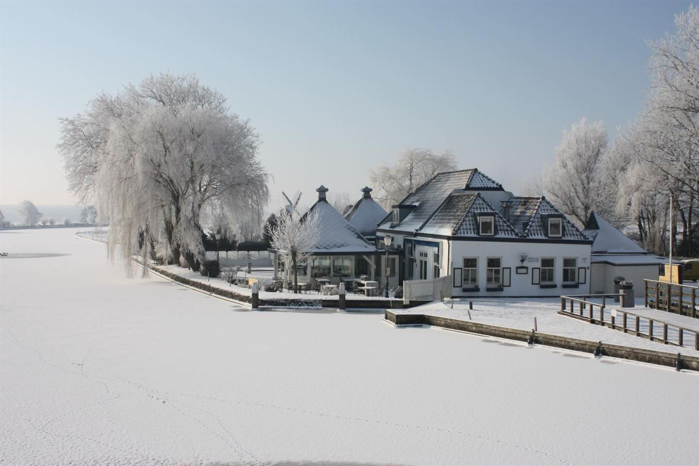
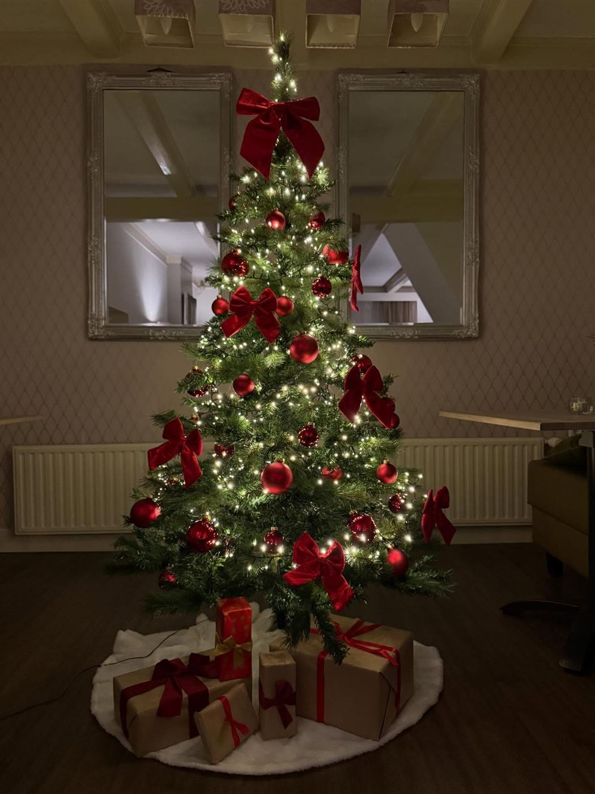
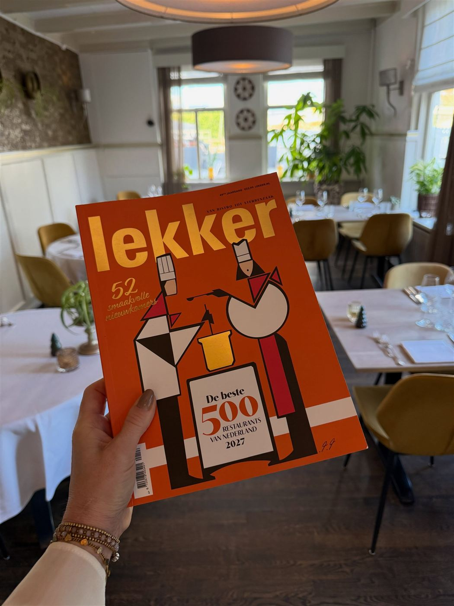

Groepen
Vanaf 6 personen eet u bij ons een vast menu. Zo kunt u samen tafelen zonder te hoeven kiezen.
Kniplaan 22, Voorschoten
Aan de Vliet, op de rand van Voorschoten en Leidschendam. Van veerpontcafé en familie-uitspanning uitgegroeid tot een haute-cuisinerestaurant. Voor lunch, diner en vergaderen.
Vermeld in de Lekker500 van 2025

Restaurant De Knip in Voorschoten, aan de rand van Leidschendam, kent een eeuwenlange historie in de horeca: van veerpontcafé en familie-uitspanning tot het haute-cuisinerestaurant van nu.
Met zijn unieke ligging aan het water werd De Knip opgericht als café-restaurant met speeltuin. Bijna een eeuw lang werd het uitgebaat door de familie Van Velsen. Het huis ligt aan de Vliet, het door de Romeinen gegraven kanaal dat de Rijn met de Schie verbindt.
Als uitspanning genoot De Knip een grote naamsbekendheid in Voorschoten, Leidschendam, Voorburg, Leiden en omstreken. Velen zullen zich dat nog herinneren.


Marcel van Teijlingen, sinds 1986
In 1986 stond Marcel van Teijlingen voor het eerst achter het fornuis. Tien jaar later, in 1996, kwam hij bij De Knip en maakte hij dit huis zijn keuken. In 2006 nam hij het stokje over en werd hij eigenaar.
Marcel van Teijlingen en het team van De Knip



Bij mooi weer eet u buiten aan het water. En in de winter ligt het huis er net zo mooi bij.
Vanaf 6 personen eet u bij ons een vast menu. Zo kunt u samen tafelen zonder te hoeven kiezen.
Ook voor een vergadering bent u welkom aan de Vliet. Neem contact op voor de mogelijkheden.
De Knip verzorgt ook bruiloften en catering. Vertel ons wat u voor ogen heeft, dan denken we mee.

Ook met de feestdagen kookt de keuken voor u. Vraag naar het kerstmenu en reserveer op tijd.
Mail over kerst
De Knip staat in de Lekker500 van 2025. Verder vindt u ons terug bij de Bib Gourmand, Euro-Toques en de Gouden Pollepel.
Reserveren gaat het snelst telefonisch. Mailen kan natuurlijk ook.
Kniplaan 22
2251 AK Voorschoten
| Woensdag t/m zondag | 12:00 – 23:00 |
|---|---|
| Tussendoor gesloten | 16:30 – 17:30 |
| Keuken lunch | tot 15:00 |
| Keuken diner | tot 20:30 |
| Keuken diner zondag | tot 20:00 |